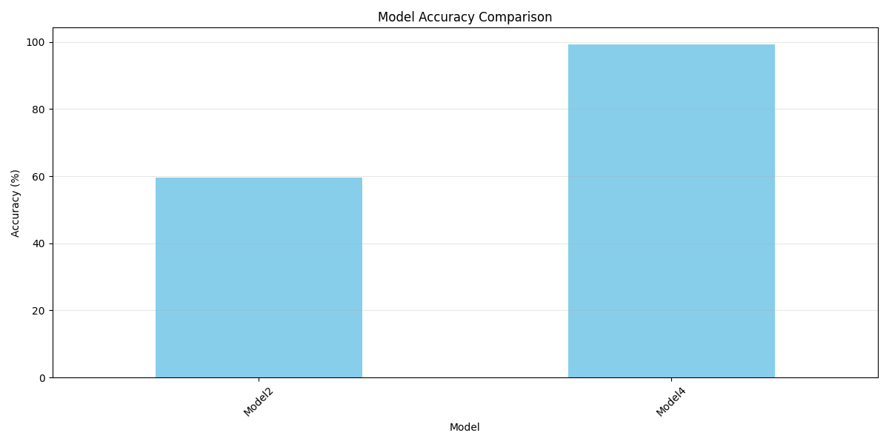
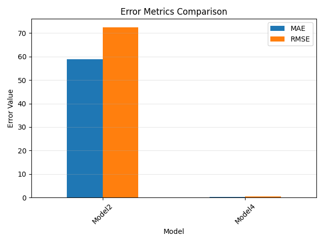
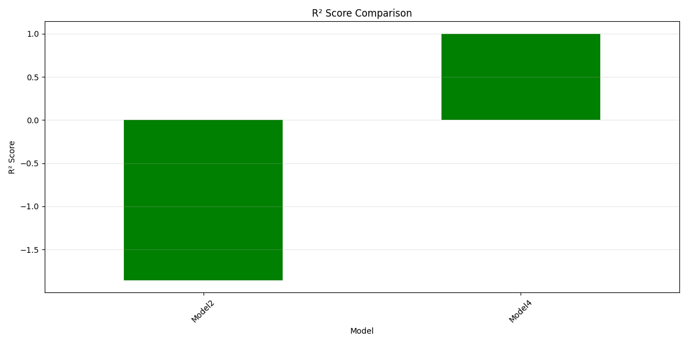

| Model | Type | File Type | Accuracy (%) | MAE | RMSE | R² | Split Method |
|---|---|---|---|---|---|---|---|
| Model2 | Decision Tree | py | 59.61% | 58.9641 | 72.4269 | -1.8558 | Chronological |
| Model4 | Linear Regression | py | 99.29% | 0.2948 | 0.5138 | 0.9999 | Random |
Model Type: Decision Tree
Features Used: col for col in df.columns if col not in [date, close
Split Method: Chronological
Test Size: 2261 samples
Performance Metrics:
Model Type: Linear Regression
Features Used: high, low, volume
Split Method: Random
Test Size: 2267 samples
Performance Metrics:
Based on the metrics above, the best performing model is: Model4 with an accuracy of 99.29%.
Best model by different metrics:
Recommendations:
Images:
  